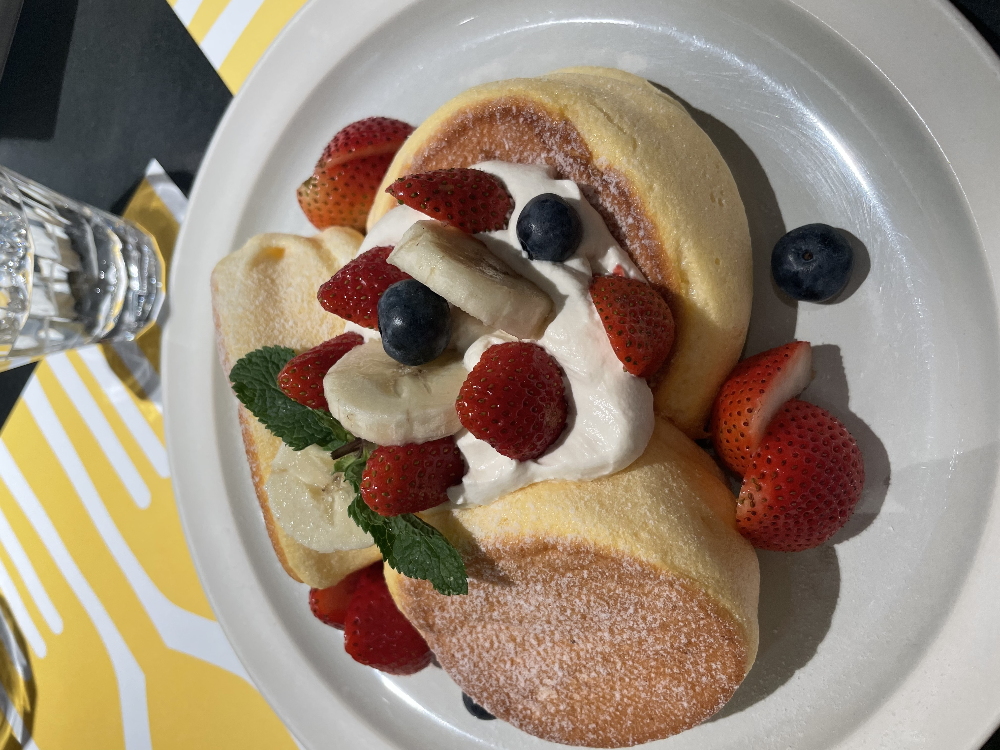

Fluffy Souffle Pancakes

Description
Japanese soufflé pancakes are tall, cloud-like, and pillowy pancakes
characterized by their extreme height and airy, jiggly texture.
Ingredients
- 2 tbsp of all purpose flour
- 1/4 tspn baking powder
- Pinch Salt
- 2 tbsp of milk
- 2 large egg yolk
- 1 tspn of vanilla extract
- 2 large egg whites
- 1/4 tspn of cream of tartar
- 1/2 tbsp of granulated white sugar
- 2 tbsp of water, divided
- Confectioners sugar for dusting
Steps
-
Grease a large frying pan lightly with melted butter or neutral oil.
-
Whisk all the pancake batter ingredients together in a mixing bowl until
combined and smooth, then set aside.
-
Make the meringue in a medium separate bowl. Whip the egg whites and
cream of tartar or white vinegar until frothy. Then whip in the sugar
and continue to whip until stiff peaks form, at least 10 minutes by
hand, and about 6 to 8 minutes using a stand mixer fitted with a whisk
attachment.
- Heat the pan on low heat as you assemble the pancake batter.
-
Add a third of the meringue to the pancake batter and gently fold, using
a rubber spatula, until combined. Fold in the rest of the meringue into
the batter. The final batter should be fluffy, airy, and smooth, like
melted ice cream.
-
Keep the pan on low to medium-low heat. Transfer the batter into a
piping bag fitted with a large round tip.
-
Pipe three even pancakes, about 3-inches each in diameter and pipe the
batter high but lower than your pan lid. Space them apart as they’ll
spread when cooking. Drizzle 1 tablespoon of water onto the pan,
surrounding the pancakes to steam. Cover the pan with a high top lid and
cook for five to seven minutes. The pancakes are ready to flip when the
bottom edges are less glossy and bottoms are slightly browned.
-
Remove the lid slowly and carefully but quickly flip the pancakes. Using
a thin spatula is key! Drizzle the rest of the water around the pancakes
and cook for another five to seven minutes until both sides are golden
brown.
-
Remove pancakes from the pan. Plate and garnish with your favorite
toppings.
taken from
https://www.modernasianbaking.com/recipes/the-best-japanese-pancakes-recipe
Home